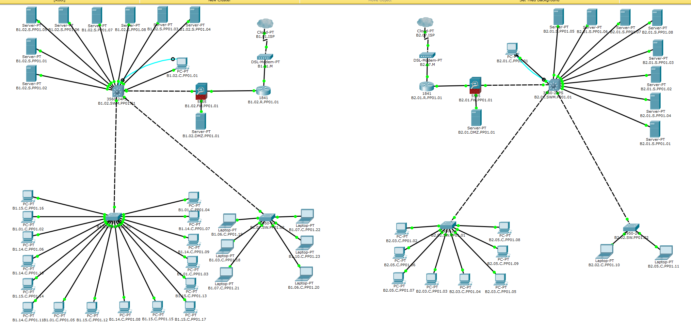
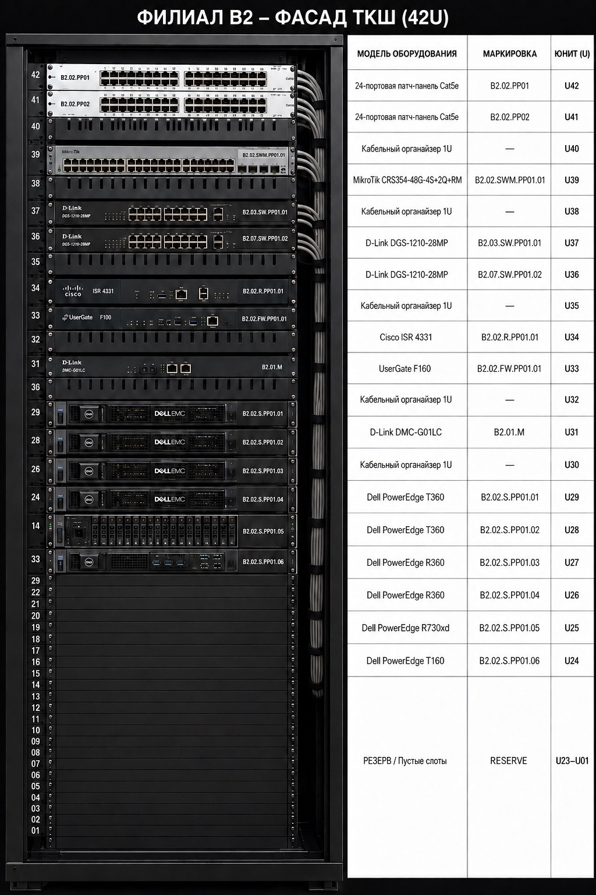

1 ПРОЕКТНАЯ ЧАСТЬ
4VLAN на объект
40линий B1 199 м
20линий B2 72 м
42Uшкаф ТКШ
Архитектура сети
Сеть построена по иерархической модели Core/Access. Ядро — L3-коммутатор MikroTik. Уровень доступа — коммутаторы D-Link с PoE. Защита периметра — UserGate F100 с зонами inside, outside и DMZ.
- B1 — главное здание: 16 ПК, 6 IP-камер, 8 серверов, DMZ-сервер
- B2 — филиал: 8 ПК, 4 IP-камеры, 8 серверов, DMZ-сервер
- Здания связаны GRE-туннелем с динамической маршрутизацией OSPF
Симуляция в Cisco Packet Tracer

Активное оборудование
- D-Link DGS-1210-28MP — коммутатор доступа, VLAN, STP, PoE
- MikroTik CRS354-48G-4S+2Q+ — L3-коммутатор ядра
- Cisco ISR 4331 — маршрутизатор, GRE-туннель
- UserGate F100 — межсетевой экран, сертифицирован ФСТЭК
- Dell PowerEdge T360/R360/R730xd/T160 — серверная инфраструктура
- Synology HD6500 — СХД 500 ТБ
Пассивное оборудование
Пассивная инфраструктура построена на базе кабеля U/UTP Cat.5e. Поставщики выбраны по критериям цены, сроков доставки и гарантии.
| Наименование | Модель | Поставщик | Цена |
|---|---|---|---|
| Кабель-канал ПВХ 40×25 мм | IEK ЭЛЕКОР CKK10-040-025-1-K01 | ЭТМ | 343 руб./шт |
| Лоток перфорированный 100×50 мм | EKF L5010001-0,55 | EKF market | 357 руб./3м |
| Витая пара U/UTP Cat.5e | Rexant 01-0043 (Cu 24AWG) | ВсеИнструменты.ру | 12 585 руб./бухта |
| Розетка информационная RJ-45 | DKC VIVA 45038 | ВсеИнструменты.ру | 426 руб./шт |
| Патч-панель 24p Cat.5e | NETLAN EC-URP-24-UD2 | ВсеИнструменты.ру | 1 400 руб./шт |
| Шкаф напольный 42U | ЦМО ШТК-М-42.6.8-1ААА | ЭТМ | 64 547 руб./шт |
| Шкаф настенный 18U | ЦМО ШРН-Э-18.350.1 | ВсеИнструменты.ру | 14 094 руб./шт |
Планы зданий с проложенной СКС


Маркировка оборудования
Формула: Здание.Комната.Тип.PPnn.nn. Пример: B1.02.S.PP01.04. Кабели: B1-K001…B1-K040, B2-K001…B2-K020.
Полный кабельный журнал — Приложение В.
Схемы L1, L2, L3


Фасады ТКШ

